Shoutouts
Shoutout to “The Menace” and “Let me give you a call on the world’s smallest phone” for biking from SF to Santa Clara. They had been wanting to do this for a while and I’m glad that after 5 hours of rubber to the road they did it!
Announcement
“The Professor” called me out for slipping on my newsletter and not being on time with it. To prove I still got it I am resolving to get these out more frequently and I have a challenge for some of you who know him and are friends with him. Those who are friends with him may know that he tried doing a newsletter at some point and stopped after the first episode. If I get this week's newsletter out on time (before August 10th at 12AM PST) I want all of you who are friends with him to text him “CNN episode 2 when?”
Monday
Today after I put the action in GitHub actions I caught up with “The Writer” and we went on a walk through GGP. We hadn’t had a proper hangout in a while so it was great to catch up with him. One tidbit from our conversation I particularly enjoyed was learning more about how he comes up with characters.
For one of the books he’s writing he’s trying to figure out how to flesh out a particular character. I asked him what sort of things he likes to do to do that. Does he focus on his character's backstory and start from there? Maybe think about an idea of what this character would be like in the present and work backwards? He said he likes to start by thinking about what a character would look like and imagine why they would look the way they do and use that to inform both their past and present. For example, are their clothes rough? Do they have a friendly look in their eye? All these things can inform a character. He also told me he goes to a writers meetup sometimes and since by virtue of this newsletter I am in some sense a writer I may go sometime and talk to other writers about it.
About half way through the park he said he had never been further west than this so I resolved to show him the bison paddock and have him go all the way across GGP. We got there and he was tickled to see the bison which made this a resounding success!
Later we went to Uzbegim and got dinner. I already ate but I was definitely down to come for the vibes and to show him some good Uzbek food! He really liked the plov so this was a double success!
Tuesday
Once I finished up my code marching I went to Washington Square park to go to “The Juggler’s” juggling event along with “Granola Girlie” and her family. Yesterday “Granola Girlie” texted me saying she had a gift for me which warmed my heart and I am definitely excited to see what this is.
Before that though I played a bunch of hackeysack with her, her family, “The Juggler,” and a few others. To be honest when I was asked to play I was not sure how good I would be at Hackensack but found that while I wasn’t good by any means I was less dreadful than I thought it would be and more importantly it was actually fun! I applied some of the skills I learned from playing soccer last week to kick the sack in this context. We were able to get to a point where we could do 4-5 touches while keeping the sack in the air and even when we didn’t I actually found myself enjoying it. Perhaps after the soccer league I signed up for I’ll be a master sacker! I would have been down to play even longer if it wasn’t for the wind I would have been down to play for even longer.
As I left I got the gift from “Granola Girlie” which was a really nice and thoughtful card! I really really appreciated this and thought it was so wholesome and sweet! Thanks so much!
Wednesday
Today was a particularly long day of taking the code and boiling it, mashing it, and sticking it into a stew. We have something in the pipes that requires some imminent attention. Unfortunately because of this I couldn’t go to Midnight Runners which was a bummer since I did tell “The Thunder from down under” that I would be going and since he just moved to the city recently I really wanted to show him the run club :(. Next time!!
Once I finished up I continued to break the Wednesday mold by going to bar night with “The Philosopher,” “That’s nuts,” and “The Twitch Streamer”. Due to “The Philosopher” having some other plans we moved bar night.
While there I was told I needed to increase my Hinge elo and swipe on some random profiles to increase it. I was told most of the profiles wouldn’t be good fits for me based on the vibes they gave off. One of the more notable ones was actually a girl who interviewed me at one of the jobs I applied for last year. This is particularly notable because it was one of the only straight leetcode interviews I had and I wound up failing. Though the real reason I was told to abort was I was told by a few people there that based on her profile she didn’t look like she would be good in bed for reasons I don’t entirely understand.
There was this other girl that does a bunch of cool art stuff which I actually found really cool and decided to swipe on with the line “You looking for your muse?” She never responded unfortunately but I thought the line was fun, hat tip to “The Twitch Streamer” for coming up with it :D
Then I went home and continued to churn out more software for a 10am deadline tomorrow which took me until 1 to do. This isn’t the norm to be clear but I don’t mind doing it every now and then.
Thursday
Once I finished achieving one with the forward pass I went to Downtown First Thursday. While I was there I met this guy who surfs a lot as a hobby and almost went professional. He said he went surfing all over the world, and I asked him where the coolest place he went was and he said Costa Rica. I never met a professional surfer before so I found that super cool.
I also ran into an old coworker I knew from a couple jobs ago who is now moving to D.C and training for the Istanbul marathon which is awesome.
The highlight of the event though was going to a line dancing lesson. I’ve line danced all of twice now and both times have been the result of me stumbling into a line dancing lesson and deciding to jump in and go for it. I stayed for about two songs and I think I was starting to get the hang of it. I think I enjoyed it but not to a crazy degree. Like it’s not the sort of thing I would find myself craving but if I happen to stumble upon it again or some friends want to go I would happily do it and enjoy it as well.
Afterwards I went home and had a video call with one of my co-workers who happens to be a friend of mine from college. Way back during the pandemic we had a tradition of calling each other and watching anime together but we kinda fell off last year and hadn’t caught up in a while. Once I joined the company we naturally talked more but we kept telling each other we would resume our tradition of watching a show together but until today we hadn’t honored that and we finally resumed a show we started last year Delicious in Dungeon. It was nice to catch up again and chat purely outside the office!
Friday
Once I put the KVs in the cache I met up with “The Fisherwoman” and we went on a walk from SOMA to The Mission. It was nice to just catch up and talk about life. One question that came out of the walk is do the majority of people here know who Jesse Owens was? I’m going to use this newsletter to do a very informal poll. Without looking him up, respond to me yes or no if you know who he was. Anyone who responds gets one gold star from me if you want or if you don’t want a gold star you get a bit equivalent to that of your choosing.
Saturday
Today I went on a hike with “The Apartment" and one of his coworker friends. We went to a place called Purisima creek in San Mateo and hiked there for a while.
The hike was about 7 pretty straightforward miles. Unlike most hikes I’ve done this time we started at the top and went down and came up. The views were quite solid
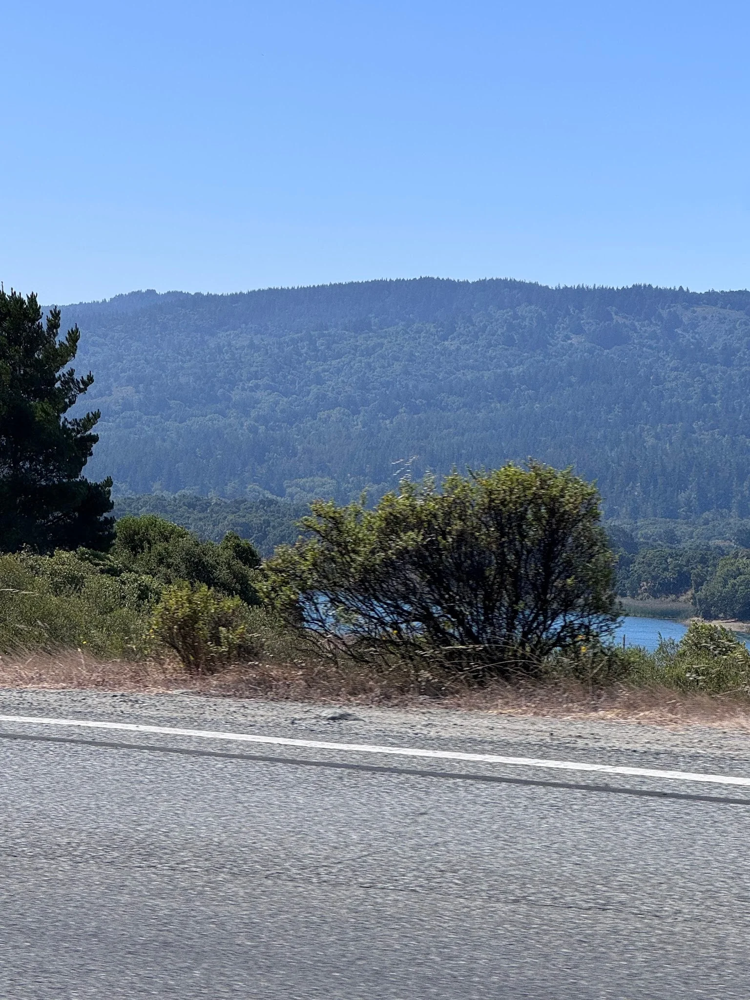
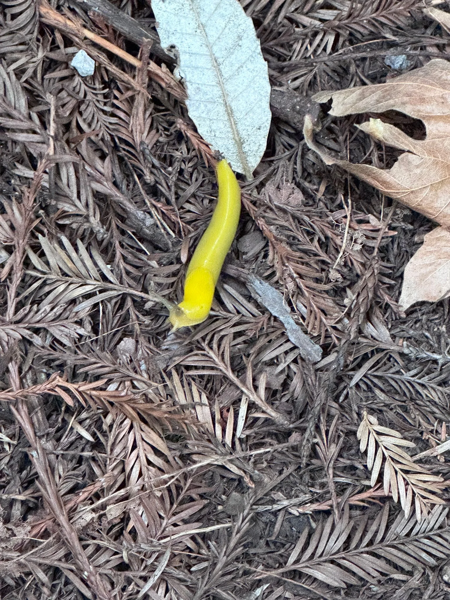
On the uphill part I took a page out of “The Philosopher’s” book and decided to try sprinting up every hill I could find which I did mostly successfully except for the very last hill which was very steep and more impotently very long at about 0.4 miles. I got about halfway up there before realizing I needed to switch to speed walking instead. That being said I think I did pretty well and I was glad I got a cardio workout.
Afterwards we all went to San Mateo proper and met up with another one of “The Awepartment’s” friends and got brunch. From there we went to the office of the company they all either work at or used to work at at some point Verkada. The office was definitely quite nice and nicer than the usual startup offices that I see. Interestingly one of the people that works there right now has an apartment in the building itself because the top floor is essentially company housing which is wild to me. His commute to work is going down one floor of the elevator which definitely feels both good and bad at the same time. Personally I like having a bit of distance from the office but there’s no denying the convenience of it all.
We played a variant of Exploding Kittens at this guy's officepartment. In this variant there are two special cards called a god kitten and a devil kitten. The god kitten is a special card which acts like any card you want. The devil kitten explodes when you get it. When someone plays a special Armageddon card they receive both and give one to themselves and one to another person of their choosing. This other person has to decide which of the two they want and the original person who played the Armageddon card gets the other.
I have a long standing bit of trying to get out of exploding kittens first and I was pleased that I was able to play the Armageddon card twice and both times get the devil kitten meaning I got to achieve my bit goals using the new variant.
Afterwards I went home and finally finished last week's newsletter. I then went on a walk for a while. I got some comments recently saying that I have been slipping and while on the walk I decided to go to Manny's and lock in. I realized it’d actually be a lot easier to write at Manny's then at home. I suspect I keep getting distracted at home so having a separate place may help me get this out sooner in the future. One thing I noticed at Mannys is the community space in the back has now converted into a coworking space where you could pay $18 to work there for the day with internet which made me a bit sad as it feels like the space got enshittified to a degree.
Another thing which I was suggested by some folks like “The Shadow Brigade” is to write a little bit every day. I think I may try writing more on my phone when I’m out and about when inspiration strikes me rather than forcing myself to just write at home.
As I write this right now I just finished writing everything above on a Saturday meaning I am well on track tog dot this week’s newsletter out ON TIME :D
Once I finished I continued walking around the mission aimlessly unsure what I really wanted to do next until a thought struck me. When I did my 24 hour walk I called up “The Professor” who suggested I go to see more movies as a viable solo hobby. On a whim I decided to go see Spider-Man Brand new day and found myself admittedly a bit underwhelmed with the experience. Before the movie there were a whole bunch of AMC ads of themselves stroking their own egos. I know there is the usual one about going to the movies to laugh and to cry and all that but there were even more ads than I remember. Granted I usually see maybe one movie a year but this felt absurd. There were ads about how good their laser light theater is, ads about how amazing it is to see a movie at AMC, and some announcement from Tom Holland thanking us all for coming. Like I get with other trailers and stuff the theater is being paid to show there but who cares about these AMC ads? I suspect their primary purpose is to pad time in case people come late.
The actual movie itself felt fine if somehow a bit boring. I’ll admit that for a while I can’t say the MCU has really been my jam when it comes to story telling but I never felt particularly captivated throughout the movie and romanticized the idea of finishing the movie so I could say I did so rather than wanting to see how it plays out. About an hour and twenty in I decided that wasn’t sufficiently good motivation and left. Don’t get me wrong I wouldn’t say the movie was horrible and I can see why people would like it but it just wasn’t for me.m
Sunday
On my way to trash pickup my mind kept coming back to the fact that I haven’t attended two trash pickups a week in a while which felt like such a step down from the fact that a couple years ago I used to lead two a week and would miss maybe a couple a year and only because I was traveling. While I still go to trash pickup and enjoy it I find myself lacking the spark and enthusiasm I used to.
I like using it as a way to see friends and I do enjoy it but something has changed and I find myself more curious to do other things. I certainly wouldn’t decide to sleep in or do nothing instead but I wonder what other recurring activities I could do. Maybe a new way of volunteering?
It’s also interesting because I’ve made so so many of my friends from this pickup and I really owe it a lot in terms of community but I haven’t found myself making a new solid friend from it in some time. Is the magic gone or is it just me?
The day to quit trash pickup is not today though. As it starts I see “The Notetaker” making his glorious return to pickup after nearly 2 months away. I’m so surprised I shout “Who are you?!” from across the room. It was such a welcome surprise to see him again. I also saw his new lady friend who is really cool! I’m very happy for them! Also at the trash pickup are “Hell yeah,” “The Ravenkeeper,” “The Menace,” “Let me give you a call on the world's smallest phone,” and some others. I talked with “The Notetaker” and we both came to the realization that we may not be attending trash pickup as much going forward. I’m at 290 pickups and while I intend to get to 300 I’m not sure if I will go for 400. Similarly he said that 200 is a good milestone and he may not go for 300. I’ve been the #1 trash picker for a while now and there is a part of me that wants to see if someone will eventually come and beat me. Sorta like when “Granola Girlie” overtook “The Juggler” to become the bean king.
At the moment I’m not sure if anyone will but who knows maybe one day.
After trash pickup I hung out some more with “The Menace” and his girlfriend. We went to ritual and his girlfriend wanted to see one of my newsletters. To be honest I wasn’t quite sure which newsletter I wanted to show. Maybe the one with the 24 hour walk? Maybe the one where I surprised “The Professor”? I certainly can’t show the one where I crashed out and was depressed for a day or two. In the end I went with the two year anniversary special which she seemed to like. She also writes and wants to start putting some of her writing on a website like I do and I’m excited to see it.
Then I walked around for a while and swung by garden creamery to find that the person who helped me try to bring back the mugicha is working today. For a while I wanted to get her a gift both to thank her for trying to help me and congratulations for graduating college. I swung by one of the stores on Valencia and got her this
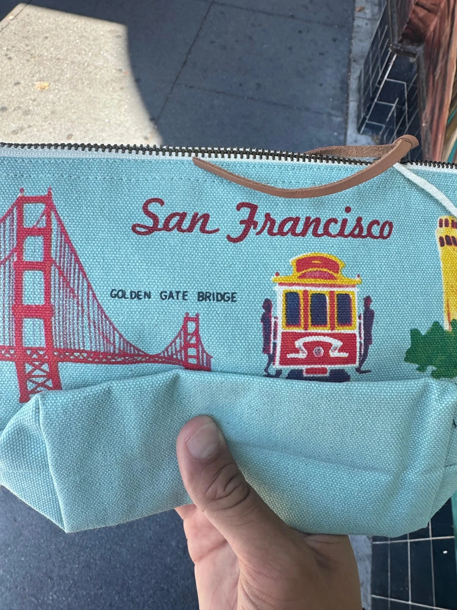
I gave it to her and she seemed quite happy and said it was cute so I think this went well. I am grateful for her continuing to ask management for me on when they would bring back the mugicha even if it wasn’t successful.
Then I went to Dolo for a while and hung out by myself and soaked up the vibes around there. Earlier in the day I bought a ticket for the odyssey but after talking to “The Menace’s” girlfriend she said that while she liked the movie it was mainly for the cinematography which I don’t think would resonate as well with me so I decided to refund the ticket.
On my bus ride back from the park I saw some skateboarders peel the emergency exit sticker off the roof of the bus and stick it on their boards. It’s not often that the actions of strangers irk me but that made me sigh in disappointment .
Later I went and caught up with “Hell yeah”. We walked around and caught up on life.
Personal training progress for the week
The dot plots below show every exercise logged through 8/6/2026; later dates are excluded. The x-axis is time, the y-axis is logged weight, and dot size represents reps or logged time. Bodyweight sets appear on the BW baseline.

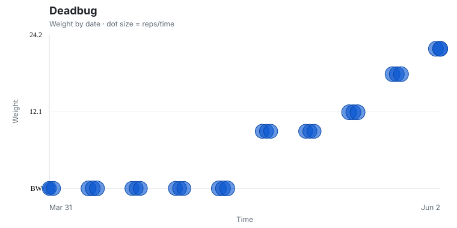

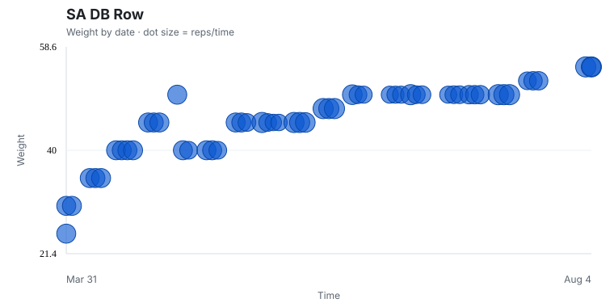
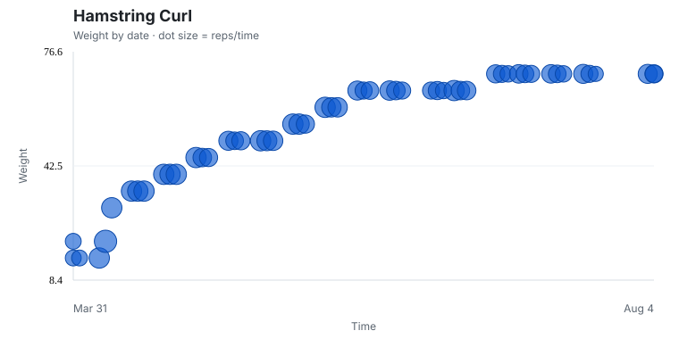

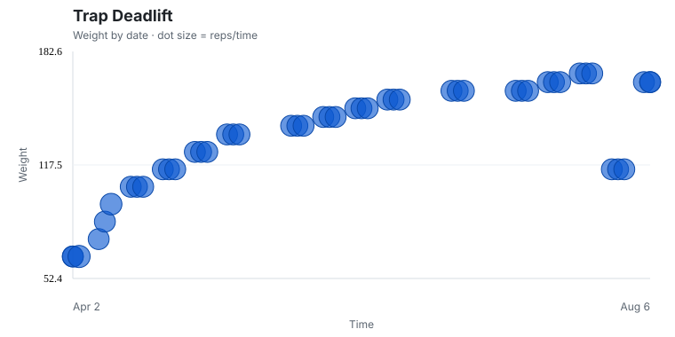


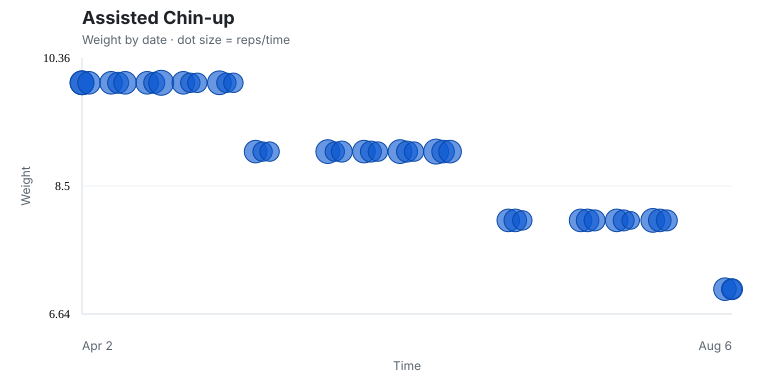
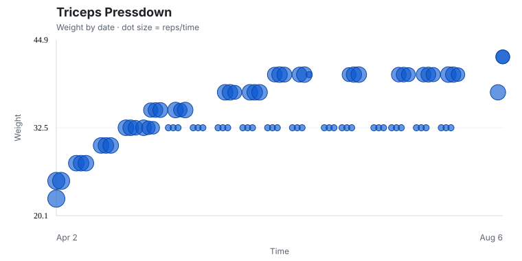
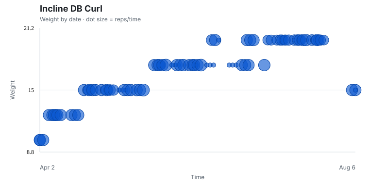
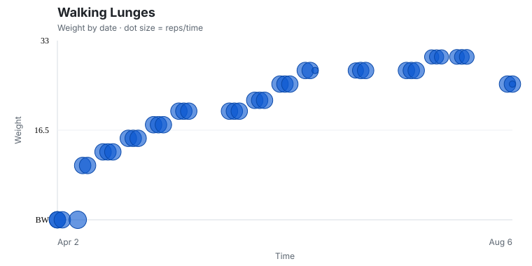
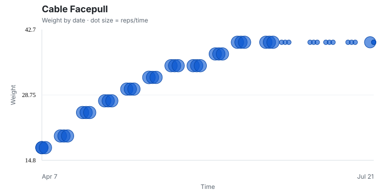
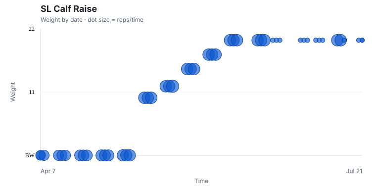